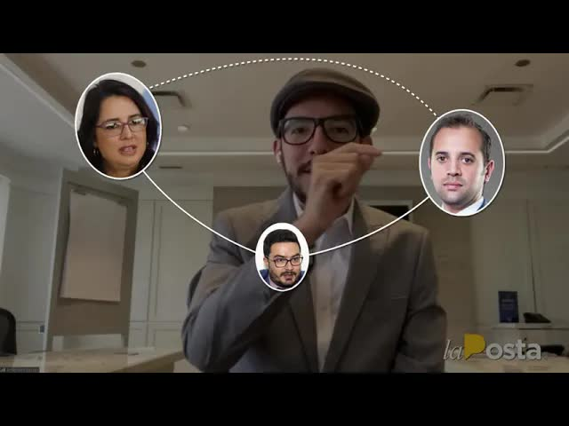
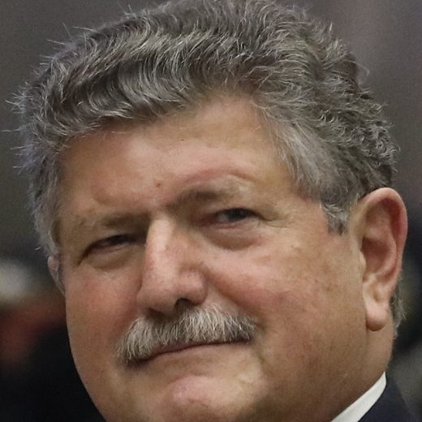
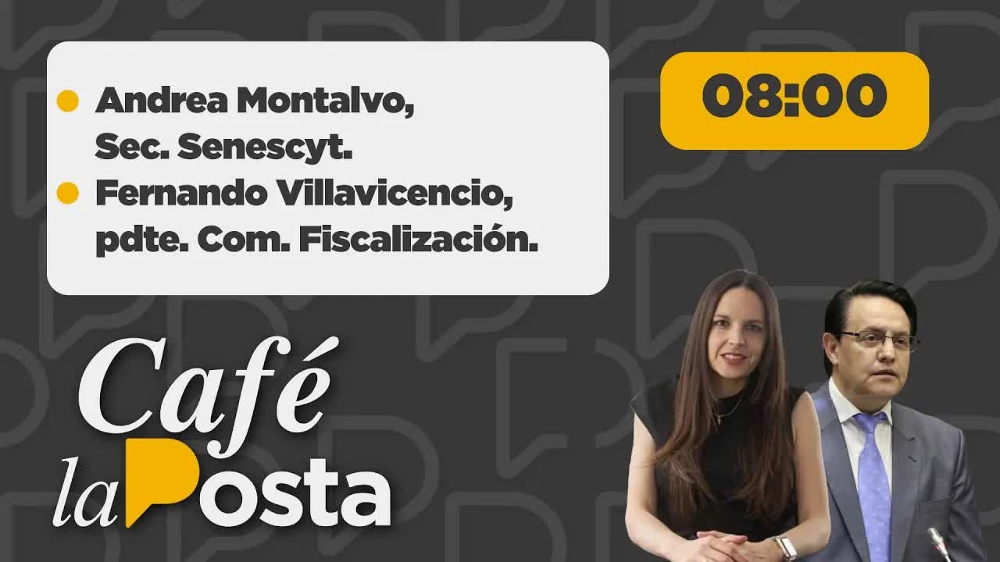
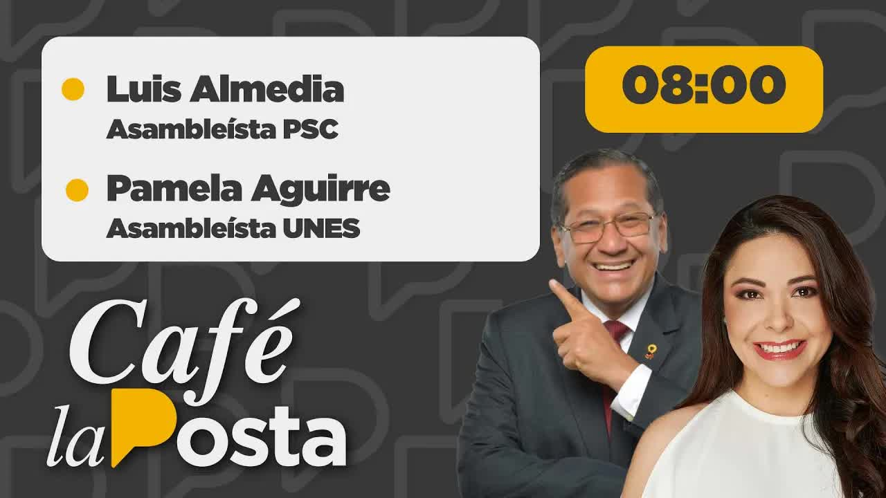
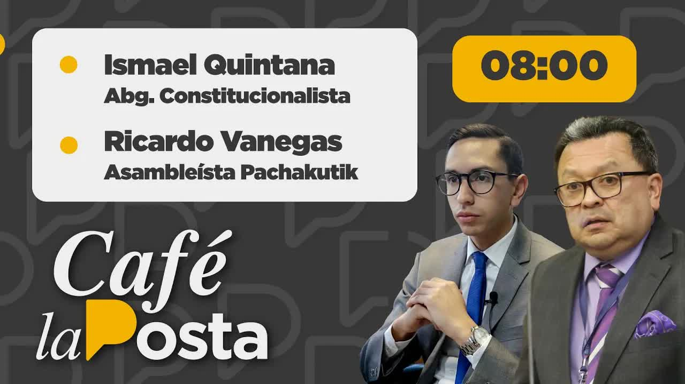
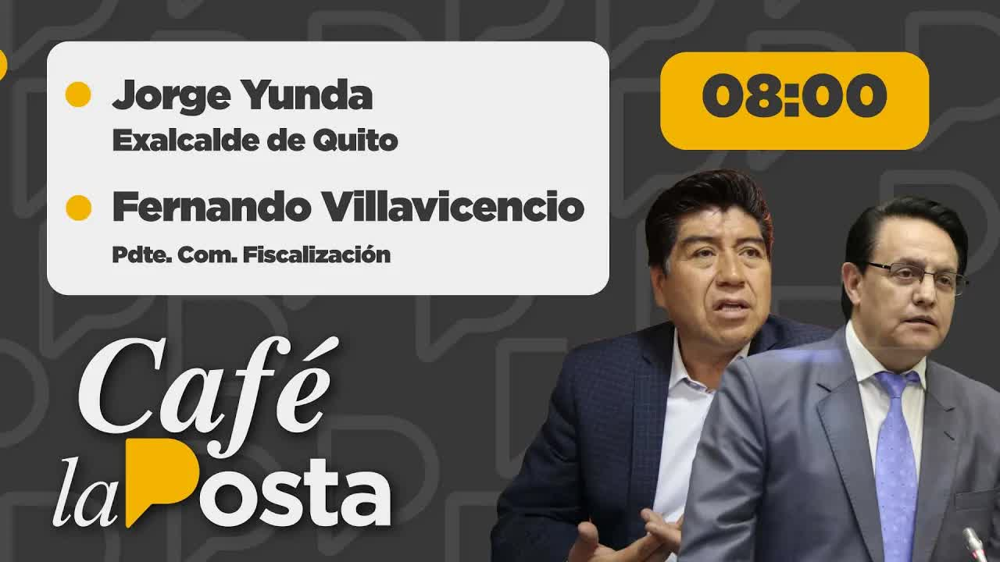
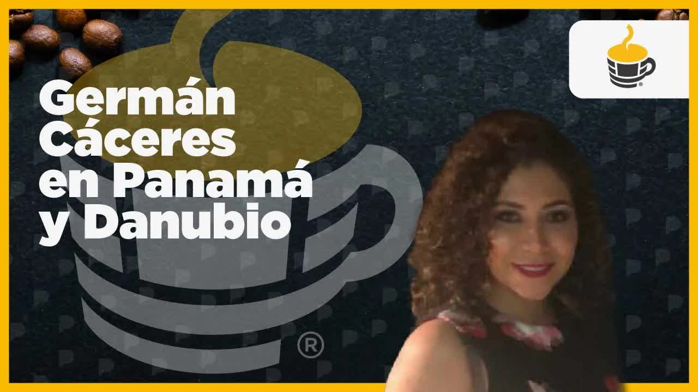
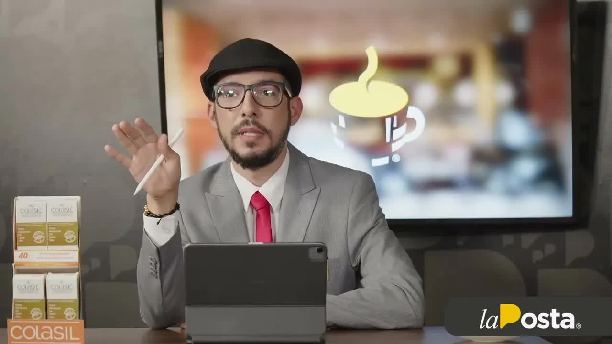
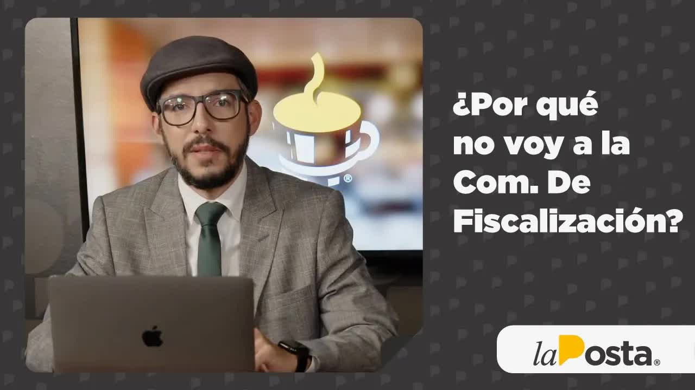

11 ago 2022 · La mano de Pozo en la red aduanera
En septiembre de 2021 alguien abordó en un centro comercial de Guayaquil a la mano derecha de la directora de Aduanas y le ofreció tres millones de dólares por un cargo. La propia directora llamó a la fiscal general. La Fiscalía interceptó las llamadas y en julio de 2022 detuvo a ocho personas. El caso se llamó Danubio. La Posta accedió al expediente, contó lo que no se había publicado y llevó a la Asamblea una tesis: el puesto que controla los contenedores es el puesto por el que paga el narcotráfico.

Para entender por qué alguien pagaría tres millones por un puesto público hay que entender qué hace ese puesto. El subdirector general de operaciones del Servicio Nacional de Aduanas, Senae, controla los patios, las revisiones físicas y los escáneres de los puertos: decide qué contenedor se abre y cuál pasa. Para un importador que evade impuestos vale mucho. Para quien exporta cocaína escondida en banano, vale más. Ecuador es desde 2021 el principal punto de salida de cocaína hacia Europa, casi toda en contenedores.
En septiembre de 2021 Juan José Aucancela, un dirigente indígena de Chimborazo, militante de CREO que había organizado apoyos a la campaña de Lasso, abordó en un centro comercial de Guayaquil a María Antonieta Reyes, mano derecha de la directora del Senae, Carola Ríos, y le ofreció tres millones de dólares para que Sergio Peña, un abogado, fuera nombrado subdirector general de operaciones. Según la fiscal Diana Salazar, fue la propia Ríos quien la llamó para denunciarlo; el expediente registra además una llamada al 1800-DELITO y un informe firmado por Reyes, que después fue despedida. El 14 de octubre de 2021 Aucancela y Jhon Salas entraron a Carondelet por la prevención principal y estuvieron una hora en la Secretaría de la Administración, la de Iván Correa. La Fiscalía interceptó las llamadas de los sospechosos durante meses. El 15 de febrero de 2022 Pons le cuenta a Richard García que el día anterior estuvo con el presidente y le comentó del proceso, y que todo se coordina con Guido Chiriboga y con Iván Correa. La noche del 21 de julio de 2022 la Fiscalía allanó en cuatro provincias, entre ellas la casa de Pons, y a las seis de la mañana del 22 formuló cargos por asociación ilícita contra ocho detenidos: Aucancela, Peña, el operador Marcos Leiva, Richard García, el Gordo García, Jhon Salas, Víctor Tonato, que captaba las carpetas, Marcos Reyes y Henry Cabrera; el juez dispuso presentaciones periódicas y prohibición de salida, no prisión. En las llamadas aparecían nombres no procesados: Juan José Pons, exconsejero ad honorem de Lasso, y su hijo; el presidente de CREO, Guido Chiriboga; el secretario de la Administración, Iván Correa; el ministro de Gobierno, Francisco Jiménez; y Danilo Carrera, cuñado del presidente, que según la Fiscalía escribía que el puesto de director de aduanas lo manejaba el uno. Bautizó el caso Danubio.
Controla los patios, las revisiones y los escáneres
Juan José Aucancela, para Sergio PeñaEl 85 por ciento del organigrama del Senae, según Salas; se recupera exportando harina
Jhon Salas a Carlos Luna, en una llamada interceptadaCinco días después la red hablaba del futuro ministro
Mencionado en un audio de la redEntre 8.000 y 12.000 por cada puesto, según las llamadas
Jhon SalasCincuenta mil de garantía a sesenta días, según la transcripción
Pons Junior a un aspiranteColaboraciones menores registradas en el proceso
Víctor Limones y otros
La Posta venía recibiendo desde meses antes reportes de que algo pasaba en las aduanas; el 25 de julio de 2022, con el nombre de Pons ya público, dedicó el primer programa al caso. El 1 de agosto abrió un segmento diario: lo no publicado del caso Danubio. Ese día entrevistó a Ítalo Cedeño, gerente general de Petroecuador, sobre corrupción en la petrolera; Boscán explicó los cuatro tipos de aforo y por qué el subgerente de operaciones decide qué contenedor se abre, y Doménica Vivanco, que había copiado a mano el expediente de unos 30 cuerpos, presentó lo no publicado. Ese fin de semana gente vinculada al narcotráfico le preguntó a Boscán por qué estaban preguntando por las aduanas. La Fiscalía no había interceptado a Pons, a Chiriboga ni a Correa; para escuchar a Chiriboga, asambleísta, y a Correa, con rango de ministro, habría necesitado autorización de la Corte Nacional por su fuero.
El 4 de agosto los asambleístas Luis Almeida y Geraldine Weber denunciaron a Carola Ríos por ejercicio ilegal de la profesión y usurpación de funciones: el título de tercer nivel con el que ejercía era, según ellos, un certificado técnico de una fundación chilena de 1994, inscrito en la Senescyt cuatro meses después de que Lasso la nombrara el 24 de mayo de 2021. Al día siguiente Almeida dijo en Café la Posta que el problema no era el título sino quién controlaba los escáneres, este contenedor sí se revisa, este no, y que la propia Policía aduanera calculaba mil millones perdonados. El 8 de agosto La Posta amplió el caso. El 11 publicó un video de siete minutos, La mano de Pozo en la red aduanera.

La tesis era esta. Fabián Pozo, secretario jurídico de la Presidencia, había sugerido el nombre de Carola Ríos para dirigir las aduanas; Ríos había trabajado para el grupo Eljuri y tenía relaciones con los grandes importadores de Cuenca. Pozo seguía siendo accionista de un estudio jurídico dedicado a temas aduaneros, cuyo otro socio, Francisco Gottifredi, presentaba escritos aduaneros con su nombre, actuaba como asesor externo de la Aduana y, según fuentes de La Posta, iba dos o tres veces por semana a dar disposiciones. Gottifredi, un civil, estuvo sentado en una reunión oficial entre el Senae y funcionarios de la embajada de Estados Unidos; fue la embajada la que preguntó al Gobierno qué hacía un privado ahí, y el Gobierno respondió que era su asesor externo. La embajada, consultada por La Posta, respondió que no comenta detalles de reuniones de trabajo. Debajo de Ríos estaba el cargo por el que se pagaba: la subdirección de operaciones, que Ríos no quería perder. Su mano derecha fue quien denunció. Y la vicepresidenta de la Comisión de Fiscalización que hizo el primer pedido de información era Ana Belén Cordero, esposa de Pozo. En el expediente, tres personas decían haber hablado con Guido Chiriboga sobre puestos en la aduana.
Yo no le estoy acusando de ser ignorante, todo lo contrario. Le estoy acusando de ser un profesional que está faltando a la ética, sabiendo que su socio es el secretario jurídico de la Presidencia y que su socio puso a la directora del Senae.
Andersson Boscán sobre Francisco Gottifredi, 11 de agosto de 2022
El 16 de agosto el pleno de la Asamblea resolvió, con 92 votos, investigar la designación de Carola Ríos. El 19 de agosto de 2022 Andersson Boscán compareció ante la Comisión de Fiscalización, presidida por Fernando Villavicencio, junto a la fiscal general Diana Salazar, para hablar de la asociación ilícita en el Senae. Expuso la estructura de Danubio tal como La Posta la había ido revelando cada mañana: los precios de los cargos, la mano de Pozo en el nombramiento de Ríos, Gottifredi ejerciendo influencia no oficial. Dijo que Ríos había mantenido sin escáneres los puertos y aeropuertos durante año y medio, con los cinco o seis escáneres que regaló una empresa china botados sin mantenimiento, y que los dos principales grupos importadores pasaban siempre por el aforo automático. Mostró un cuadro de relaciones en el que Xavier Jordán y Leandro Norero aparecían como cabezas de una red de corrupción en las aduanas; Villavicencio dijo que venía de la inteligencia aduanera y que él mismo se lo había dado a Ríos ocho meses antes; la fiscal dijo no conocerlo. Y nombró a Danilo Carrera, cuñado del presidente, a Rubén Cherres y a Hernán Luque, cinco meses antes de El Gran Padrino. Salazar respondió que sin pruebas no podía hacer nada y que el resto estaba bajo reserva; según Boscán, el presidente se enojó con la fiscal ese día y la relación quedó tensa.
Lo que La Posta dijo primero se fue confirmando. El 17 de agosto Boscán contó que en la sala técnica de escuchas había grabaciones a las que se les bajaba el volumen para que el sistema no las transcribiera, entre ellas las de Chiriboga y los Pons, y que un allanamiento se frustró porque el ministro Patricio Carrillo dijo que los policías estaban ocupados en Guayaquil. En octubre las transcripciones de los Pons aparecieron en el expediente a partir de la página 63.000: el proceso pasó de 10.000 páginas en julio a casi 80.000, 69 cuerpos, en octubre. Pons rindió en agosto una versión de media página en la que lo negó todo; el fiscal no le hizo una sola pregunta. La Comisión lo convocó tres veces y no fue; tampoco Fabián Pozo, Aparicio Caicedo, Pons Junior, Gottifredi ni Carola Ríos a la primera. Ana Belén Cordero se excusó de todo lo vinculado a Danubio. Danilo Carrera, llamado por la Fiscalía, tampoco se presentó a las primeras citas.

Plan V criticó la comparecencia: conjeturas sin fuente, información oída en pasillos, un cuadro sin origen. Boscán respondió que esas eran las cosas que fue a decir a la Asamblea y que algunos tuvieron la indecencia de llamar exageración. El 22 de agosto Villavicencio vino a Café la Posta a seguir el caso. El 18 y 19 de octubre La Posta publicó las transcripciones de las llamadas interceptadas a los Pons y a los operadores de la red. El 20 de octubre de 2022 se cerró la instrucción fiscal, con 428 diligencias y 114 impulsos fiscales.
Hace ocho meses, cuando nos invitaron a declarar por el caso Danubio, ya nombramos a Danilo Carrera, a Rubén Cherres, a Hernán Luque, al narcotráfico tomándose las aduanas. ¿Y qué fiscalizaron?
Andersson Boscán, 18 de abril de 2023, al explicar por qué no volvía a la Comisión
Danubio tuvo un solo sentenciado. Víctor Limones, ingeniero comercial, aceptó un procedimiento abreviado y el 24 de enero de 2023 la jueza Nelly Parrales lo condenó a un año de prisión por asociación ilícita: en las llamadas se mencionaban colaboraciones de 300 dólares por cargos con sueldos de 2.500 a 3.000. Los otros ocho fueron llamados a juicio. La audiencia se fijó por primera vez para el 9 de noviembre de 2023 y se ha suspendido ocho veces: noviembre de 2023, mayo y septiembre de 2024, y las siguientes. En febrero de 2026 la jueza Keltthya López fijó el noveno intento para el 18 y el 25 de marzo de 2026 y advirtió que no permitiría más suspensiones. La pena posible es de hasta cinco años. Primicias reveló que la red de Peña habría fabricado pruebas de fondos falsas para ofrecer los sobornos.
El 18 de octubre de 2022 La Posta leyó las transcripciones que la sala técnica de escuchas hizo de las llamadas entre Juan José Pons y su hijo, Juan José Pons Junior: contratos y pagos, quince palos, quince millones; Pons Junior gestionaba reuniones con el ministro de Energía Xavier Vera y con Hernán Luque, gerente de las empresas públicas, en el edificio del Ministerio del Litoral, y pedía que se viera que se movían para que paguen los otros quince; los investigadores creían que era la comisión de un pago a un proveedor. Vera y Luque no respondieron. Y las conversaciones en que Pons le indicaba a Richard García, el Gordo García, su operador, a quién invitar a una reunión para tratar el tema de los cargos, que según Pons no caminaba. Un dirigente de Santa Elena contó que, posesionado Lasso, Pons les pidió hojas de vida para cargos públicos en la provincia. El 19 de octubre, los chats de Aucancela, Tonato, Salas y Luna: el 29 de abril de 2022 hablaban de un postulante al Ministerio de Agricultura, doce va adentro, tienes que pedir quince o veinte; cinco días después Bernardo Manzano fue designado ministro. Pons negó toda participación: dijo conocer únicamente a García, un dirigente que organizaba grupos populares en distintas provincias, desde hacía más de quince años. Pons Junior dijo que solo conocía a García desde 2013 y que con Peña habló de política.
Sergio Peña, la pieza clave, fue elegido asambleísta por la Revolución Ciudadana en 2023 y después expulsado del correísmo. Carola Ríos siguió al frente del Senae; en abril de 2023 seguía ahí; nunca fue procesada. Fabián Pozo tampoco. Juan José Pons rindió una versión de media página y nunca compareció ante la Comisión. Iván Correa salió de Carondelet el 9 de febrero de 2023, el día después de que La Posta publicara el organigrama de la estructura. Boscán volvió a la Comisión de Fiscalización en febrero de 2023 para presentar El Gran Padrino, con 35.000 documentos, y en abril de 2023 anunció que no iría por cuarta vez: la Fiscalía tenía ocho investigaciones abiertas con sus aportes, por asociación ilícita, delincuencia organizada, cohecho, concusión, peculado y tráfico de influencias, y la Comisión, con Ana Belén Cordero implicada, no había fiscalizado nada de lo que él llevó sobre las aduanas. Villavicencio, dijo, admitió tener guardado el informe de la mafia albanesa.
Las aduanas siguieron siendo el centro. En 2023 Danubio se cruzó con El Gran Padrino y con la mafia albanesa: la estructura que pedía quince millones por la zona de carga del aeropuerto, según Boscán, era la misma que la Policía había mapeado en el informe León de Troya. Villavicencio fue asesinado el 9 de agosto de 2023. Norero fue asesinado en la cárcel de Latacunga el 3 de octubre de 2022, dos semanas antes de que se cerrara la instrucción de Danubio.
Actualizado el 5 de septiembre de 2026
Lasso la nombra directora de Aduanas.
Aucancela ofrece tres millones a la mano derecha de Carola Ríos. Ríos llama a la fiscal. Empiezan las interceptaciones.
Aucancela y Salas entran a la Secretaría de la Administración de Iván Correa.
Pons dice que estuvo con Lasso y que coordina con Chiriboga y Correa.
La red habla del futuro ministro; cinco días después Manzano es designado.
Allanamientos en cuatro provincias. Aucancela, Peña, Leiva, García, Salas, Tonato, Reyes y Cabrera, procesados sin prisión.
El caso Juan José Pons en Café la Posta.
Segmento diario con el expediente. Entrevista a Ítalo Cedeño, gerente de Petroecuador.
Almeida y Weber cuestionan su título y los escáneres.
Gottifredi en la reunión con la embajada de Estados Unidos.
92 votos para investigar la designación de Carola Ríos.
Boscán ante la Comisión de Fiscalización, junto a la fiscal Salazar.
En la cárcel de Latacunga.
Las llamadas interceptadas a los Pons y a los operadores; Agricultura y el aeropuerto.
428 diligencias.
Víctor Limones, un año, procedimiento abreviado.
Un día después de que La Posta publicara el organigrama de la estructura.
Boscán vuelve a la Comisión con 35.000 documentos.
Se suspende. Seguirán siete más.
Por los chats con Norero publicados en Metástasis.
La jueza López advierte que no habrá más suspensiones.
El candidato al cargo de tres millones. Luego asambleísta correísta, expulsado del movimiento.
Dirigente indígena de Chimborazo, militante de CREO, que hizo la oferta según la denuncia.
Directora del Senae desde mayo de 2021, exempleada del grupo Eljuri. Denunció la oferta ante la fiscal; a ella la cuestionaron por el título y los escáneres.
Secretario jurídico de la Presidencia. Sugirió a Ríos; socio de un estudio aduanero.
Expresidente del Congreso, exconsejero ad honorem de Lasso. Su nombre aparece en las llamadas.
Ingeniero comercial. Único condenado, un año.
Mano derecha de Carola Ríos. Recibió la oferta y firmó el informe.
Presidente de CREO. Tres personas del expediente dicen haber hablado con él sobre puestos en la aduana.
Secretario de la Administración. Aucancela y Salas entraron a su despacho en octubre de 2021.

Cuñado del presidente. Según la Fiscalía, escribía sobre el puesto de director de aduanas.
Fotos vía Wikimedia Commons. Juan José Pons: Asamblea Nacional del Ecuador (CC BY-SA 2.0); Danilo Carrera: Asamblea Nacional del Ecuador (CC BY-SA 2.0).
El Gobierno de Estados Unidos se reúne regularmente con todos sus socios, incluido el Senae. La embajada no comenta detalles sobre las reuniones de trabajo con sus contrapartes.
El asambleísta juró no haber pedido dinero ni favor alguno a cambio de gestionar y pidió a la Fiscalía continuar hasta dar con los autores.
Calificó la comparecencia de Boscán como conjeturas y narcoteorías sin fuentes citadas.
Abrió una indagación a Boscán por los chats con Norero y dijo que mostraban una cercanía que iba más allá del periodismo. Boscán: Norero fue una fuente y sus preguntas se limitaron a corrupción administrativa.
En un comunicado aclaró que no existió reparto de cargos por parte de autoridades y pidió investigar. El secretario de Seguridad Diego Ordóñez: no hay evidencia sobre el círculo del presidente; el Gobierno es de gente honrada. Un asesor de comunicación envió una carta llamando mentirosa a La Posta.
La Fiscalía lleva diez meses investigando y no he sido imputado ni acusado.
Solo conoce a Richard García, desde 2013; con Sergio Peña mantuvo conversaciones de índole política.
Cualquier persona puede denunciar, pero sin pruebas no puede hacer nada; el resto está bajo reserva.









definición con reconocimiento facial y lector de placas vehiculares hemos venido y seguimos brindando más herramientas para seguir protegiendo a guayaquil porque tu seguridad es primero alcaldía de guayaquil al ah estás preparado para empezar tu carrera porque sabes que para cumplir tus objetivos y superar tus retos necesitas ser un profesional estás listo para asumir tu futuro porque solo la perfección que se alcanz…
Leer la transcripción completareconocimiento facial y lector de placas vehiculares hemos venido y seguimos brindando más herramientas para seguir protegiendo a Guayaquil porque tu seguridad es primero alcaldía de Guayaquil estás preparado para empezar tu carrera porque sabes que para cumplir tus objetivos y superar tus retos necesitas ser un profesional estás listo para asumir tu futuro porque solo la perfección que se alcanza con sacrificios log…
Leer la transcripción completavehiculares hemos venido y seguimos brindando más herramientas para seguir protegiendo a Guayaquil porque tu seguridad es primero alcaldía de Guayaquil estás preparado para empezar tu carrera porque sabes que para cumplir tus objetivos y superar tus retos necesitas ser un profesional estás listo para asumir tu futuro porque solo la perfección que se alcanza con sacrificios logrará tu desarrollo en ecotec te damos las…
Leer la transcripción completalector de placas vehiculares hemos venido y seguimos brindando más herramientas para seguir protegiendo a guayaquil porque tu seguridad es primero alcaldía de guayaquil estás preparado para empezar tu carrera porque sabes que para cumplir tus objetivos y superar tus retos necesitas ser un profesional estás listo para asumir tu futuro porque solo la perfección que se alcanza con sacrificios logrará tu desarrollo en ec…
Leer la transcripción completaha habido una competencia interna en agua si bien todavía esposo sugirió el nombre de una persona para ser directora de las aguas de miel carola se siente a la salud ana trabajó antes por el grupo de cubrir tiene grandes relaciones con otros grupos importadores y bueno y el gobierno dice haber necesitamos consejeros y honores gente como le llaman ellos consejeros externos a la persona que acaba en la unidad de mucho …
Leer la transcripción completahemos venido y seguimos brindando más herramientas para seguir protegiendo a guayaquil porque tu seguridad es primero alcaldía de guayaquil estás preparado para empezar tu carrera porque sabes que para cumplir tus objetivos y superar tus retos necesitas ser un profesional estás listo para asumir tu futuro porque solo la perfección que se alcanza con sacrificios logrará tu desarrollo el ecotec te damos las mejores her…
Leer la transcripción completavehiculares hemos venido y seguimos brindando más herramientas para seguir protegiendo a Guayaquil porque tu seguridad es primero alcaldía de Guayaquil estás preparado para empezar tu carrera porque sabes que para cumplir tus objetivos y superar tus retos necesitas ser un profesional estás listo para subir tu futuro porque solo la perfección que se alcanza con sacrificios logrará tu desarrollo en ecotec te damos las …
Leer la transcripción completauna buena lámina de seguridad puede salvar tu vida los viajes en familia Ya no serán incómodos un auto estándar nunca más llega a Quito Falcón seguridad lujo y conforta el más alto nivel llevamos 18 años siendo líderes en el equipamiento Automotriz láminas de seguridad tapicería en cuero nanocerámica restauración interior y mucho más conoce nuestro showrooms con locales únicos y personalizados a nivel nacional en Qui…
Leer la transcripción completauna buena lámina de seguridad puede salvar tu vida los viajes en familia Ya no serán incómodos un auto estándar nunca más llega a Quito Falcón seguridad más alto nivel llevamos 18 años siendo líderes en el equipamiento Automotriz láminas de seguridad tapicería en cuero nanocerámica restauración interior y mucho más conoce nuestro showrooms con locales únicos y personalizados a nivel nacional en Quito Ambato y riobamb…
Leer la transcripción completaestructura criminal en su gobierno señor presidente lo que hay es esto el organigrama de la estructura criminal presentado por la posta en rojo tienen los que están por los techos como Rubén Leonardo Cortázar Roberto bueno como Jorge orbe como Julio León como Hernán Luca quien el presidente prometió traer del cogote en azul en los despedidos como Javier Vera como Mauricio Kim que luchando procuraduría como Iván Corre…
Leer la transcripción completadeclarar por el caso danubio ya nombramos a Danilo Carrera a Rubén cherres a Hernán Luque al narcotráfico tomándose las aduanas entonces con el señor norero Y qué fiscalizaron discúlpenme escucharon ustedes a la condición de fiscalización fiscalizar al entonces socio del ministro que controlaba las aduanas escucharon ustedes a la doctora Cómo se llama la vicepresidenta Ana Belén Cordero directamente implicada interes…
Leer la transcripción completaTranscripciones de los subtítulos automáticos de cada programa. No están corregidas a mano: sirven para buscar una frase y llegar al minuto exacto del video, no como cita textual literal.
Limones aceptó el procedimiento abreviado. Los demás esperan juicio.
El juicio principal no se ha instalado.
Los videos son los programas originales de Café la Posta, alojados en este sitio. Las citas de terceros se reproducen tal como fueron publicadas.